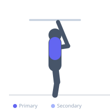

Exercise guide / Scapular Pull-Ups
Scapular Pull-Ups
Scapular pull-ups are a foundational shoulder rehabilitation exercise performed from a hanging position on a pull-up bar. Without bending the elbows, the exerciser actively depresses and retracts the shoulder blades, lifting the body slightly through scapular movement alone. This isolates the lower trapezius and serratus anterior with the arms at full extension — a critical position for establishing the shoulder stability needed before progressing to full pull-ups. Used in shoulder impingement rehabilitation, rotator cuff programs, and gymnastics foundations.
Primary muscles
trapezius lower
latissimus dorsi
Secondary muscles
trapezius middle
rhomboid major
Stabilizers
flexor carpi radialis
Equipment
Pull-Up Bar (Doorframe)
Optional
Pull-Up Bar (Freestanding Tower)
Pull-Up Bar (Wall-Mounted)


Starting position
- Hang from a pull-up bar with both hands in an overhand grip, shoulder-width or slightly wider. Arms are fully extended, body hanging passively.
Setup
- Begin from a full passive hang (scapulae elevated). Grip firmly. Feet can be slightly bent at the knees if needed to clear the floor.
Steps
- Step 1: Begin hanging passively with shoulder blades elevated and arms fully extended.
- Step 2: Without bending the elbows, actively depress and retract the shoulder blades, drawing them downward and together.
- Step 3: This motion will cause the body to rise slightly (a few centimeters). Hold this depressed position briefly.
- Step 4: Slowly return to the passive hang, allowing the shoulder blades to fully elevate. Repeat.
Coaching cues
- Imagine pulling your shoulder blades into your back pockets
- Elbows absolutely straight throughout — this is not a pull-up
- Feel the bottom of the shoulder blades activate — that is the lower trapezius
Breathing
- Exhale as you depress the scapulae. Inhale as you release back to the passive hang.
Range of motion
- The range is small — a few centimeters of body rise from full scapular depression. The arm angle should not change.
Tempo
- 2s depress, 2s hold, 2s release
Common mistakes
- Bending the elbows — this converts it into the beginning of a pull-up. Elbows stay locked throughout
- Barely activating the scapulae and treating it as a passive exercise — you should feel the lower trapezius working clearly
- Rushing — slow controlled depression and return are what build the target muscles
Safety
- If you lack grip strength to perform this safely, use lifting straps
- Avoid if any shoulder position in the full hang causes sharp pain — stay in a pain-free range
Training
- endurance: 8–15 reps
- strength: 5–10 reps
- endurance: 2–4 sets
- strength: 2–3 sets
- Rest: {'endurance': 60, 'strength': 90}